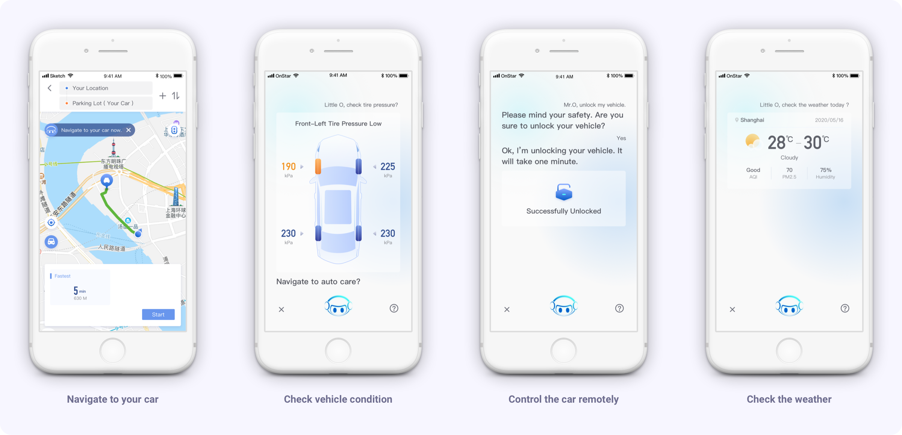
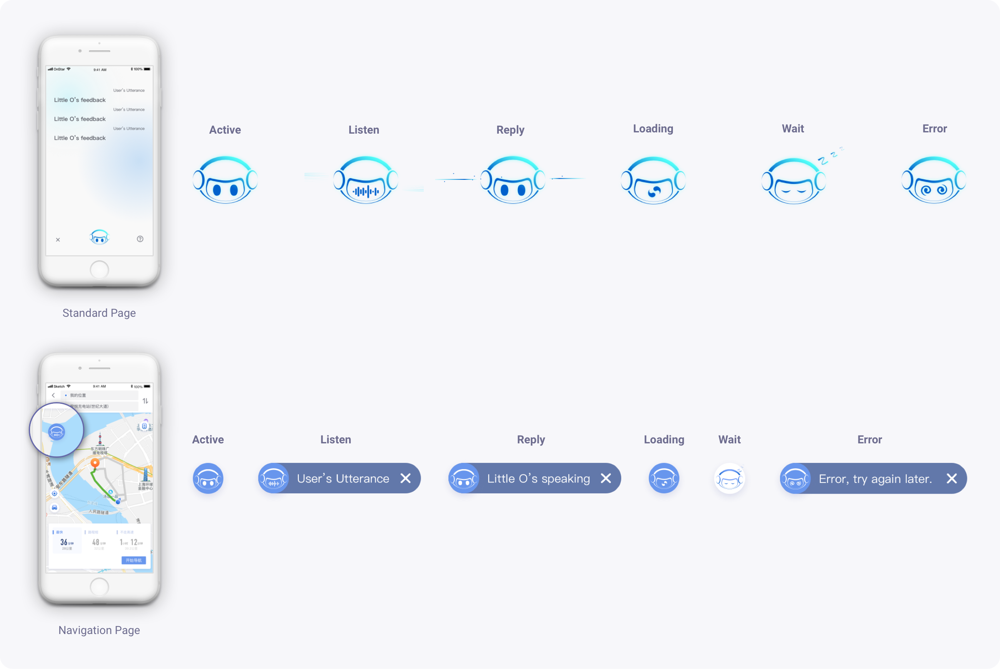
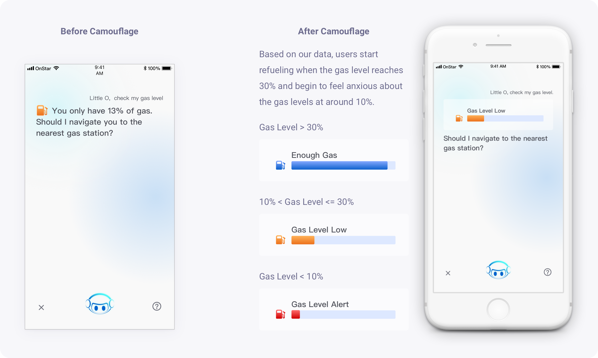
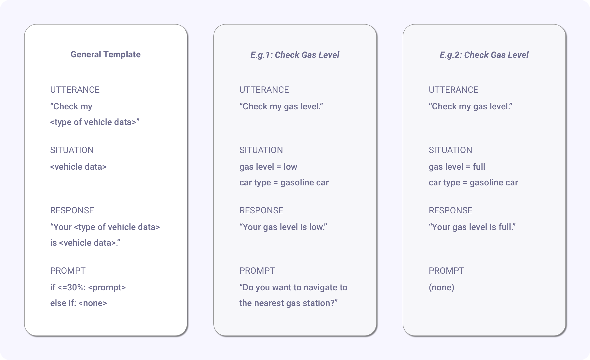
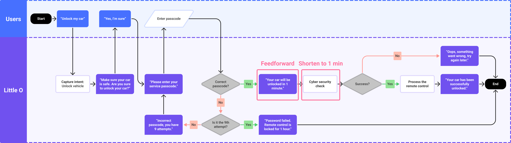
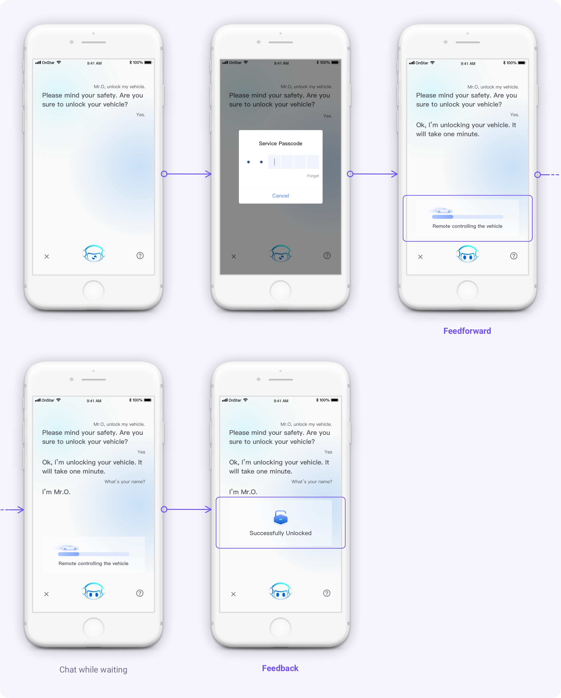
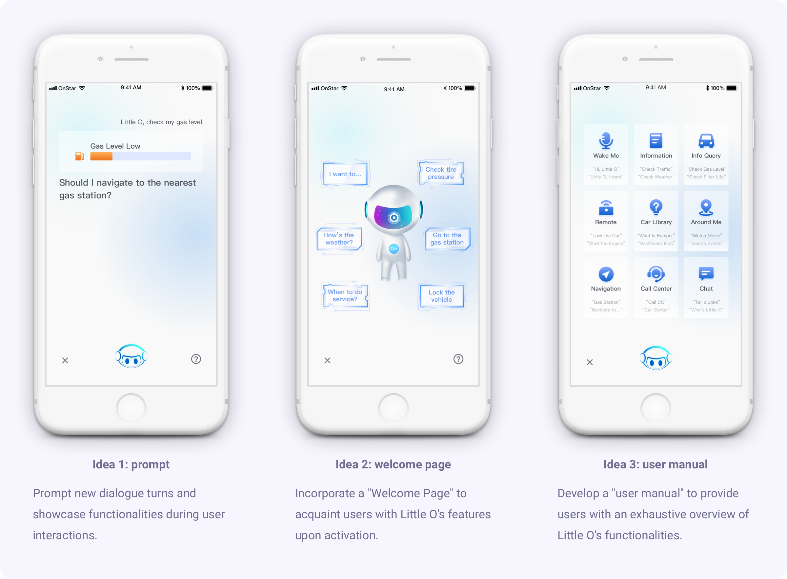

General Motors
voice assistance design
The "Little O" project marked the advent of an innovative voice assistance feature, being the inaugural integration in Buick automobiles and the OnStar App, a revolutionary IoT tool facilitating remote vehicle control.
(NDA note: All sensitive data within this case study have been redacted to adhere to the non-disclosure agreement. The perspectives shared herein are exclusively mine and do not reflect General Motors' stance.)
Design team
Product designer (myself)
Product manager
Conversation designer
IT engineers
My responsibility
UX Design across 118 use cases
Collaborating with VUI Designer
Navigating technological constraints
Duration
3 weeks
Company
Key features
Staus
Demo
impact
Securing a competitive advantage in the automotive industry
The integration of the voice assistant within Buick vehicles and the OnStar mobile app is vital, as studies indicate over 60% of individuals who have utilized a voice assistant during their drive regard its availability as a significant factor in their purchasing decisions. This initiative is pivotal in sustaining Buick's competitive edge in the automotive market.
Enhancing road safety for drivers
Furthermore, this initiative transcends beyond just enhancing vehicular convenience—it significantly contributes to road safety. By reducing screen-based interactions within vehicles, we foresee a notable decline in digital distractions, contributing to 3.8% of crash injuries. (Lam) Hence, this development promises to redefine convenience and pledges a safer driving experience, marking a significant stride in reducing accident rates due to digital distractions.
challenge 1
Crafting a comprehensive list of user scenarios
Creating an extensive list of potential user paths proved to be a formidable challenge, particularly for use cases such as "Vehicle Condition Query". The challenge stemmed from the variability in data types across different car models.
Method: secondary research
I delved into General Motors' internal database to understand the diverse Buick car models and the respective data related to their condition. This deep dive facilitated an exhaustive analysis where I listed all potential situations a user might encounter during a vehicle condition check within the user flow. This thorough approach ensured that I accounted for every possible scenario, enhancing the user flow's robustness and reliability. Here is a glimpse into the diverse data types I worked with:
Design with authorization limitations
I collaborated with data engineers to validate the data's availability. However, this project imposed certain data-sharing restrictions. Consequently, we couldn't display precise figures of the vehicle's condition, necessitating the camouflage of some data.
Iteration
Upon identifying and listing all conceivable situations, I developed prototypes for each user path. Presented here is a snapshot of one such path:
Result
Example of the user case: vehicle condition query
The majority of vehicle data queries are efficiently handled as one-turn dialogues. Here are a few exemplary user paths we devised:
On the screen

challenge 2
Optimizing user experience amidst technical constraints
Initially, the vehicle remote control feature entailed a 3-minute long cybersecurity verification process, which adversely impacted the user experience, creating the impression of a stalled system.
My initiative
- Recognizing the necessity for enhancement, I spearheaded a meeting with the lead engineer, product manager, and project manager to discuss the potential detrimental effects on the user experience. I showcased my findings from testing the pre-launch version, which highlighted the urgency for improvements. Consequently, the team committed to augmenting the feature's speed, successfully reducing the wait time to a more tolerable 1 minute.
- Despite the reduction to 1 minute, I acknowledged that the duration might still hinder a seamless user experience. To counteract this, I integrated feedback and feedforward mechanisms within the user flow, fostering a more intuitive and streamlined process that aligns with user expectations.
Iteration
Flowchart
On the screen
challenge 3
Boosting user awareness regarding voice assistant capabilities
One factor inhibiting users from using voice technology is the limited knowledge of the full breadth of capabilities.

The biggest hurdle for me has been awareness – understanding what I’m able to do with these devices.
— Female, 37 (PWC LLP)
Design goal
My focal objective was to elevate user comprehension concerning Little O's capabilities, fostering more widespread adoption.
Design
Pros and cons
Each strategy harbored its advantages and disadvantages but complemented each other harmoniously. I opted to integrate all of them to offer users multiple avenues to familiarize themselves with the voice assistant's capabilities.
Validation
To gauge the effectiveness of the implemented strategies, I asked my team to integrate event tracking within the flow of these three features. This allowed us to meticulously analyze the engagement levels and pinpoint the percentage of users who were actively interacting with each idea.
Result
The data revealed that Idea 1 – the prompt, garnered the highest user engagement, followed by the welcome page, which also demonstrated substantial effectiveness, as observed from the active user interactions with the tags to explore Little O's functionalities.
reflection
Tight timeline
The most formidable challenge encountered during this project was the stringent timeline. I conceptualized and executed 118 user cases within a 3-week timeframe, aligning seamlessly with the company's strategic objectives while ensuring project feasibility through adept coordination with the conversation designer, data scientist, and engineers.
Next step
Given the opportunity for further iteration, I aspire to conduct usability tests to ascertain the efficacy of the user flows and to enhance the voice assistant's desirability through improved user awareness and engagement, leveraging the welcome page, instructions, and prompts.
Citation
October 2002. ScienceDirect. https://www.sciencedirect.com/science/article/abs/pii/S0022437502000348.
PwC LLP. "Prepare for the voice revolution." 2018. PwC. https://www.pwc.com/us/en/services/consulting/library/consumer-intelligence-series/voice-assistants.html.